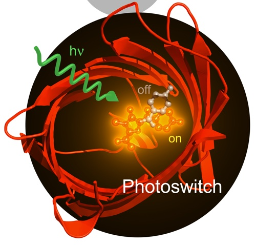
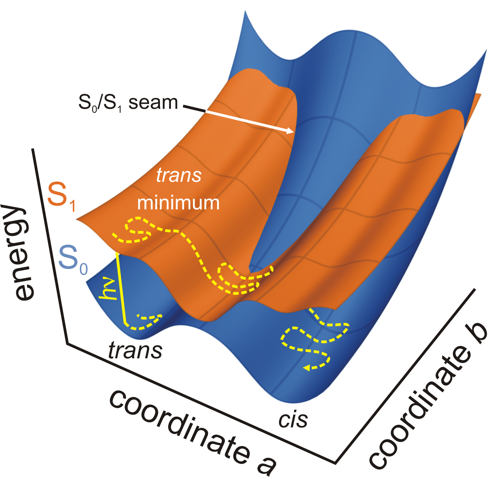
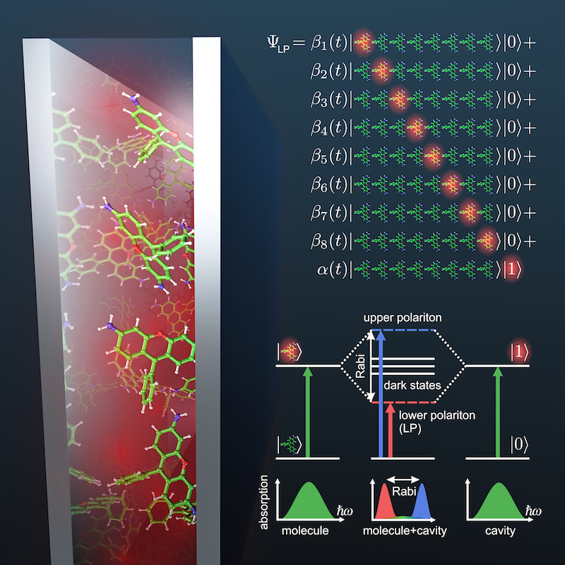
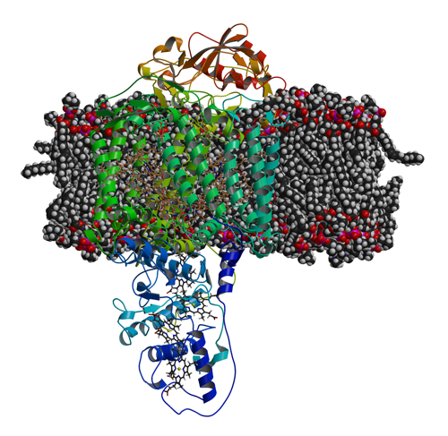
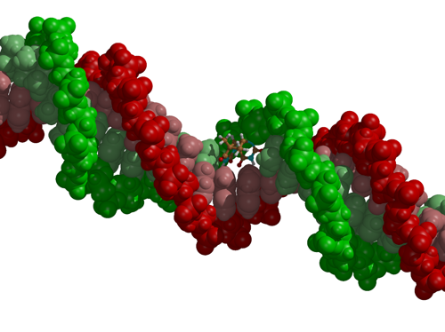
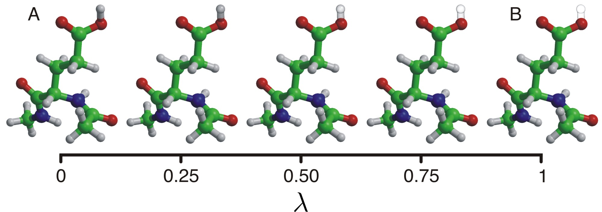
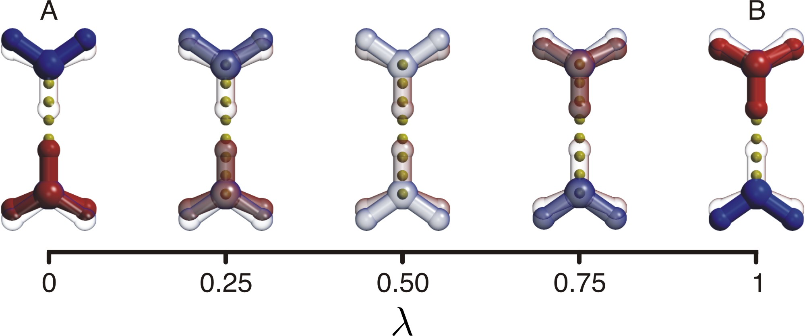
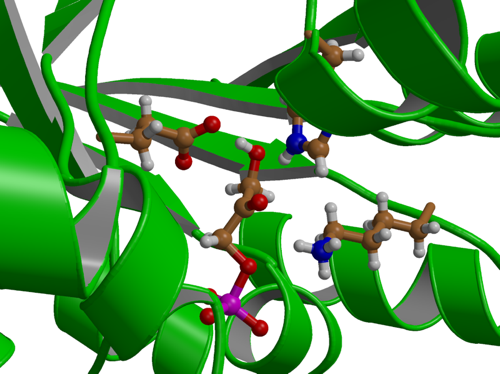

Research
Here is an overview of the projects that we are working on. As we always try to think of new projects, and finish old ones, this list will never be completely up-to-date. The group is always looking for motivated people to join our efforts. Thus, if you are interested in one of the projects, or would like to see one of your projects added to the list, let us know!
Computational Photochemistry
Organisms have evolved a wide variety of mechanisms to utilize and respond to light. In many cases, the biological response is mediated by structural changes that follow photon absorption. These reactions typically occur at femto- to picosecond timescales, and are thus within reach of QM/MM molecular dynamics simulations.
|  |
| AsFP, a switchable fluorescen t protein.. |
In our simulations, we use a multi-configurational quantum mechanical (QM) description (CASSCF, CASPT2) to model the electronic rearrangement for those parts of the system that are involved in the absorption. For the remainder, typically consisting of the apoprotein and the solvent, a simple forcefield model (MM) suffices.QM/MM gradients are computed on-the-fly, and a diabatic surface hopping procedure is used to model the excited state decay. We have demonstrated the validity of this hybrid QM/MM approach for photobiological reactions in recent applications on photoactivation of photoreceptor proteins, on photo-switching of fluorescent proteins and on benign and malign photochemical reactions in DNA. In addition to providing quantities that are experimentally accessible, such as structural intermediates, fluorescence lifetimes, quantum yields and spectra, the simulations provide also information that is much more difficult to measure experimentally, such as reaction mechanisms and the influence of individual aminoacid residues.
|  |
| Potential energy surfaces on which photochemical reactions take place. |
In a new project, funded by the Academy of Finland, we aim to go one step further and use computer simulation to design fluorescent proteins with desired photochemical properties. This way we hope to contribute to new developments in for instance bio-imaging, and information technology.
Photoisomerization of the chromophore in the photoactive yellow protein, as observed in a molecular dynamics trajectory.
Polaritonic Chemistry
When photoactive molecules interact strongly with confined light modes as found in plasmonic structures or optical cavities, new hybrid light-matter states can form, the so-called polaritons. These polaritons are coherent superpositions (in the quantum mechanical sense) of excitations of the molecules and of the cavity photon or surface plasmon. Recent experimental and theoretical works suggest that access to these polaritons in cavities could provide a totally new and attractive paradigm for controlling chemical reactions that falls in between traditional chemical catalysis and coherent laser control. However, designing cavity parameters to control chemistry requires a theoretical model with which the effect of the light-matter coupling on the molecular dynamics can be predicted accurately. Therefore, we have developed a multiscale molecular dynamics approach to simulate the effect of strong coupling to confined light on the reactivity of large ensembles of photoactive molecules.
|  |
| Polaritonic Chemistry: molecules inside optical cavities interact stronger with the confined light than outside, which can change the chemistry. |
Electron and Proton Transfer
Electron transfer lies at the heart of biology. Despite the availability of high-resolution x-ray structures of many of the protein complexes involved in photosynthesis and metabolism, the mechanistic details of how electron transfer occurs at a molecular level are still unclear. Our current understanding of electron transfer reactions is based on empirical models, such as Marcus theory, which only provide a qualitative non-atomistic picture and cannot be used to design new systems. To find out in atomistic detail how proteins have evolved to meditate electron transfer processes and how they reach the observed high efficiencies a more general formulation of electron transfer is required.
|  |
| Photosynthetic reaction cente r embedded in a lipid bilayer. |
Electron transfer is driven by geometrical distortions that change the molecular orbitals. In biological systems these distortions are often imposed by the protein environment. In addition, the response of the environment upon changes in oxidation state of the prostetic groups can have a strong dynamic effect as well.
Radiation Damage
Exposure to high doses of high-energy radiation causes irreversible damage in biological matter. At lower doses alteration of the genetic information is possible, leading to mutations. Despite the relevance of these processes in biology, little is known about the mechanism by which irradiation can cause destruction or mutation.
|  |
| DNA with a thymine dimer that was formed after absorption of UV light. |
Using the multi-reference (CASSCF) electronic structure method to compute the forces acting on the nuclei at each step of the molecular dynamics simulation, the response of the system to the irradiation can be studied in atomic detail. Although we thus far addressed only photochemical reactions initiated by optical transitions in biomolecules, there are no restrictions on using our approach to simulate also the effect of other radiation types on biomolecules, including DNA and cell membranes.
Dimerization of two stacked thymine bases in a single DNA strand after absorption of a UV photon.
Molecular Dynamics at constant pH
In standard molecular dynamics simulations protons are assigned to titrating sites at the start of the simulation and not allowed to change. However, in proteins the protonation is intimately linked to conformation. Conformational changes can induce changes in protonation state, and vice versa. To take this correlations into account, we have developed a technique that treats protons as additional dynamic variables. Protons can be created and annihilated on-the-fly, depending on interactions with the local environment the and the pH. The latter is a parameter that users of the gromacs MD program can set. With this approach, we have a means to study the effect of pH on biomolecular processes, including catalysis (see below). Also, we have now a means to 'equilibrate' protons in x-ray structures, that do not show their positions.
|  |
| Constant pH MD: protonation states can adapt to changes in the environment or external pH. |
Proton transfer in Molecular Dynamics simulation
Based on the same principles as the constant pH MD simulation approach, we have developed a protocol for treating proton transfer in classical MD simulations, called HYDYN. In contrast to common reactive force field approaches for proton transfer in MD, HYDYN is thermodynamically consistent and can thus be used not onlly to investigate mechanisms of proton transfer, but also free energies, for example in umbrella sampling. Detailed balance is achieved in HYDYN through a combination of Metropolis Monte Carlo and lambda dynamics.
|  |
| HYDYN: excess proton can transfer from donor and acceptor in a thermodynamically consistent way. |
Enzyme Dynamics
The QM/MM method has become an established tool in computational enzymatics. However, in most QM/MM studies, only the electrostatic effect of the protein environment is considered. Dynamic contributions are often overlooked. Protein motions can correlate strongly with the reaction dynamics, suggesting why mutations far from the active site can affect the catalysis.
|  |
| Active site of Triosephosphate Isomeraze. |
Computing dynamic trajectories at room temperature (300 K) is therefore more realistic than calculating the minimum energy pathway (0 K), in which important entropic effects are ignored. However, most enzymatic reactions are relatively slow processes, ranging from microseconds to seconds, and are thus out of reach for even the most efficient QM/MM sampling schemes available today. In contrast, with the right choice of simulation protocol the lower range of these time scales can be achieved in classical MD simulations. Therefore, to explore the effect of the enzyme dynamics on catalytic processes we combine long-term classical sampling with occasional short QM/MM simulations.